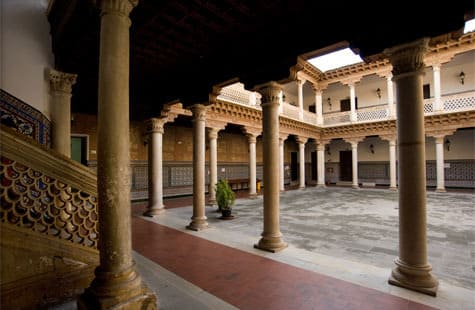

Llegada a Andalucía
Sevilla
Antes de llegar a La Linea pase por 2 institutos. Uno en san Jose de la Rinconada, Sevilla, donde apenas estuve 1 mes. El IES San Jose de la Rinconada, donde estuve como profesor de Sistemas Electrónicos enseñando en el ciclo de grado medio de Instalaciones Eléctricas y Automáticas. Ese Instituto contaba con un personal que me puso las cosas muy fáciles en todo y me apoyaron el tiempo que estuve allí.
Estuve viviendo en una Venta del pueblo Alcalá del Río, a solo 15 minutos del instituto. Aprovecharía para visitar Sevilla y los pueblos de alrededor
Granada
Al acabarse la sustitución me desplazaría a
Granada, donde trabajaría como docente de Sistemas Electromecánicos en el
IES Hermenegildo Lanz. Allí apenas tenía 9 horas de clase ya que los chavales se encontraban realizando prácticas en empresas.
Allí estuve realizando muchas excursiones, senderismo y turismo, conociendo a Maldo, un amante de la naturaleza y de las excursiones, montando un grupito con el que fui conociendo aquella zona.
La Línea de la Concepción
Ya al año siguiente pese haber pedido Almería me toco la provincia de
Cádiz, y concretamente La Línea de la Concepción, un lugar bastante temido por profesores de España debido a la propaganda negativa que sale de la TV. Durante años fue un bastión del narcotráfico y una zona bastante deteriorada por el desempleo. Sin embargo, pasado ya el siglo XX, ha realizado una buena recuperación económica y nada tiene que ver lo que pintan en la tele con el ambiente de tranquilidad del municipio.
El trabajo, el instituto
En la Linea estaría trabajando en el ciclo del grado Superior de Mantenimiento Electrónico y el curso de especialización de la Digitalización del Mantenimiento Industrial en el
IES Virgen de la Esperanza. El instituto pese a ser uno de los más grandes de Andalucía y recibir dotaciones de alta cuantía no estaba a la altura en muchos aspectos, comparado con otros institutos en los que había estado. Muchos planes de realizar cambios pero nunca se llevaban a cabo, si bien los problemas grandes del edificio estaban solventados como goteras, pinturas, cristales etc. Algunos departamentos contaban con bastante equipamiento pero el mio estaba bastante obsoleto. Muchos cambios en poco tiempo ya que todo el profesorado antiguo de Electricidad y Electrónica desapareció del instituto sobre el año 2020, dejando todo en estado caótico.
La Escuela de Idiomas
Ahí ignaguraría junto con mis compañeros, el ciclo bilingüe, en el que contaríamos con una dotación europea para irnos de viaje con los alumnos y aprender el ingles. Al empezar el curso me apuntaría a la escuela de idiomas con el fin de conocer gente y actualizar mis conocimientos de idiomas y poder llegar a tener el nivel C1 tan apreciado hoy en día por las entidades públicas y privadas. En dos años pasaría con esfuerzo la prueba para obtenerlo. Lo cursaría
la escuela de idiomas de San Roque, muy bien administrada, con profesores de talla y muy aplicados. Ahí en horario de mañana contaría con unos compañeros de clase mayores que yo en edad. Me lo pasaría muy bien siendo la gente del sur de Cádiz muy habladora y divertida.
La fiesta y la gastronomía
No me costaría integrarme ya que en La Linea la gente es muy acogedora y habladora. Además es destino de muchos funcionarios interinos y en prácticas, ya sea la policía, la docencia o la sanidad. Mucha gente joven con ganas de pasárselo bien. Allí pasaría a salir de sólo algunos fines de semana a muchos días de la semana incluidos miércoles y jueves, debido al buen tiempo durante todo el año y a que cerca de mi instituto esta una de las zonas más animadas para salir los jueves, donde mucha gente joven se concentra de noche. Cuenta con una oferta variada de ocio nocturno con tres plazas repletas de restaurantes, bares y pubs, como el Mollys, un pub irlandes con conciertos en vivo y karaoke, el Urban, pub de ambiente SBK para bailar, el Ginevra, pub discoteca con música comercial del sur de Andalucía.
La cultura y la tradiciones
En La Línea como en toda Andalucía hay dos fechas que se celebran con gran intensidad. Estas son fiestas conmemorativas de hechos vinculados a la religión católica, uno de los pilares de la creación de lo que es hoy llamada España, siendo
la navidad y la semana santa. A estas fechas se suman tradiciones que en la mayor parte de españa apenas se celebran como es la Zambomba, originaria de Jerez de la Frontera y Arcos de la Frontera, en la que en La Línea en vez de 3 semanas, se celebra durante un fin de semana en diferentes lugares de ocio. El más conocido, El Coto. Una sala de fiestas que abre contadas ocasiones al año con capacidad para 3000 personas. Otra de los eventos anuales es el Carnaval, que es muy conocido en la capital, Cádiz. También La Línea cuenta con unas fiestas muy concurridas que se celebran a mediados de Julio. Un recinto ferial muy cuidado y organizado donde vienen feriantes de toda Andalucía ya que al ser de las primeras ferias cercanas a Málaga se llena de gente.
Las Playas
La Linea cuenta con dos playas, una playa pequeña en la Bahía de Algeciras que pega al Atlántico y otra que da al Mediterráneo. El agua en el estrecho de Gibraltar esta bastante fría todo el año siendo apta en verano para gente que le guste el agua por debajo de 20 grados. Entre estas playas se encuentra el Peñon de Gibraltar.
Gibraltar
La ciudad de Gibraltar, ciudad colonia, perteneciente al Reino Unido desde hace 300 años. Estar en La Línea te hace posible cambiar de ambiente, idioma y arquitectura apenas a 50 metros del sur de la ciudad. Existe una gran variedad de ocio y posibilidades en este pequeño territorio.
![[Valid RSS]](https://www.onepointsync.com/wp-content/uploads/2016/08/valid-rss-rogers.png "Validate my RSS feed")